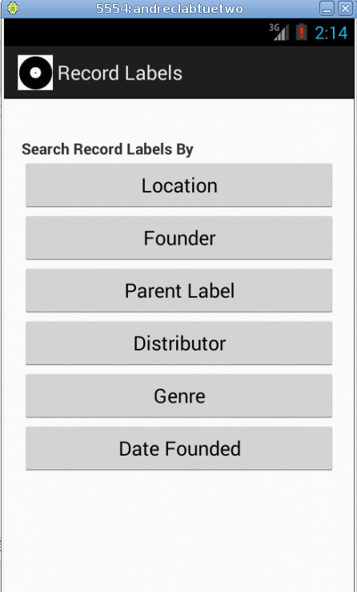

Android
Learning android programming means learning java programming first. New programmers cannot do better than Head First Java by Kathy Sierra, Bert Bates. The very best (and very difficult) book on Java is The Java Programming Language by Arnold, Gosling and Holmes. Bruce Eckel's Thinking in Java 4th edition provides very efficient learning. Learning to program in Java is a steep climb that takes years before comfort sets in.
Almost all of the apps on this page are available on the Google Play Store. About half were written in Eclipse and half in Android Studio. Many of them have a read only embedded database, usually sqlite, with great data. All of them run on almost every android phone. Almost every one reports zero crashes. Most of these apps were written in a few days with simple coding and standard patterns. Most of them have data shared under this license:
https://en.wikipedia.org/wiki/Wikipedia:Text_of_Creative_Commons_Attribution–ShareAlike_3.0_Unported_License
All of the source code is open source and available on github.
Agemaker
Calculates age as decimal years.
Agemaker calculates age as decimal years. Users enter a birthday and press a button to reveal the age as decimal years. Researchers or clinicians often want to record the age, in decimal, at a given time instead of a birth date and current date. Interface works in English or Spanish. No data is ever recorded or transmitted by this app. Image credit: Sarah Neff
Aircraftcarriers
Contains facts, images and history of hundreds of carriers.
Aircraftcarriers contains facts, images and history of hundreds of aircraft carriers. There is a page for every carrier, hundreds of images and a searchable database.
Aircraftcarriers contains facts and history of hundreds of carriers. There is a page for every carrier, hundreds of images and a searchable database. The Navies button reveals one button for each navy with an aircraft carrier in its fleet. The Carrier Images button allows you to scroll through a long list of carrier images. The Summary buttons show basic information about each aircraft carrier in the chosen order. The Aircraft Carriers button reveals the entire list of carriers. The three text boxes, and their triggering Search Carriers button, search the database of text associated wth every carrier. You may fill in any or all three text boxes. Search terms are NOT case-sensitive. Please DO NOT use quotes because search phrases are automatically quoted (assumed to be exact). For example if you enter into the three text boxes:
rear admiral Sprague Samar
...and hit the Search Carriers button, it will retrieve the 13 carriers that have all three of those exact phrases somewhere on the page for the carrier. Search rules are simple but not as easy as Google. As another example, if you want to find all of the carriers that have both of the words yokohama and sunk anywhere, then you would NOT search in the first box for this
yokohama sunk
...as you would on Google. Instead you will want to put one term by itself in one of the three search boxes, like this
yokohama sunk
Putting both words into one search box will search for the exact phrase yokohama sunk, and in this example, will return zero results. Separate boxes will yield two results for this example. Word fragments work and so 193 will find carriers with any reference to a year in the 1930s. Almost all text and imagery are under the license found here: en.wikipedia.org/wiki/Wikipedia:Text_of_Creative_Commons_Attribution–ShareAlike_3.0_Unported_License Thanks to aircraft carrier enthusiasts everywhere and to the wiki editors who wrote the information found here. There are errors and omissions in this data. Get the most accurate and up to date information here en.wikipedia.org/wiki/List_of_aircraft_carriers
Civil War Generals
Contains history of all generals of the US Civil War.
Civil War Generals contains facts and history of all generals of the US Civil War. There is a page for every general, hundreds of images and a searchable database. The Pictures button allows you to scroll through a long list of generals. The three text boxes, and their triggering Search button, search the database of text associated wth every general.
All text and imagery are under the license found here: en.wikipedia.org/wiki/Wikipedia:Text_of_Creative_Commons_Attribution–ShareAlike_3.0_Unported_License
All thanks go to civil war enthusiasts everywhere and to the wiki editors who wrote the information found here.
Deadlyrics
A searchable database of lyrics of many Grateful Dead songs.
Deadquotes
Interesting and funny quotes of famous people and characters.
Collection of quotes by or about people and characters. These are enjoyable reads.
Deadshowfinder
Deadshowfinder Identify which show performance your Grateful Dead tape was recorded at.
FIND THE SHOW ON YOUR GRATEFUL DEAD TAPE
The most important capability of this application, I hope, is its ability to identify which show performance your Grateful Dead tape was recorded at. If you have an unlabeled tape, or a long mp3 file of a show, or otherwise need to discover which show the music was played at, this application can probably help to establish the truth. It works like this:
- You input two songs that were played consecutively at the show.
- The application displays the complete set lists for shows where the song sequence you submitted were played in the same order at the show.
- You browse the list of candidate shows to discover which show your tape was made from. When you see a set list with the songs on your tape, in order, you have found the correct show. At that point, you can label your tape with the date, location and set list for the show.
OTHER USES:
You can search shows by date and by location.
LIMITATIONS:
This application works because Jerry Stratton kindly compiled and shared his database of Dead shows (still available at gdead.berkeley.edu). Unfortunately, the database has some modest inconsistency that makes this application less useful. For example, when selecting a song and typing Fire, and wa
Disasters Worldwide
Disasters wordwide from 1900-2008
A comprehensive listing of of over 17,000 disasters, natural and otherwise, from around the globe.
Since 1988 the WHO Collaborating Centre for Research on the Epidemiology of Disasters (CRED) has been maintaining an Emergency Events Database EM-DAT. EM-DAT was created with the initial support of the WHO and the Belgian Government.
The main objective of the database is to serve the purposes of humanitarian action at national and international levels. It is an initiative aimed to rationalise decision making for disaster preparedness, as well as providing an objective base for vulnerability assessment and priority setting. For example, it allows on to decide whether floods in a given country are more significant in terms of its human impact than earthquakes or whether a country is more vulnerable than another for computing resources is.
EM-DAT contains essential core data on the occurrence and effects of over 16,000 mass disasters in the world from 1900 to present. The database is compiled from various sources, including UN agencies, non-governmental organisations, insurance companies, research institutes and press agencies.
This is only public domain natural disaster database around (two other global sources are private: Sigma from Swiss Re and NatCat from Munich Re).
The EM-DAT database is protected by the law of 30 June 1994 on copyright and the law of 31 August 1998 on the legal protection of databases.
Female Astronauts
Would you go on a one-way trip to Mars if the opportunity arose?
Female Astronauts lists every woman that has completed a spaceflight. Thanks to these women, NASA and everyone that supports them.
These astronauts are totally awesome. In 2013, Valentina Tereshkova offered to go on a one-way trip to Mars if the opportunity arose.
All text and images were provided by the wikipedia authors. Find the latest updates online at en.wikipedia.org/wiki/List_of_female_astronauts All data are available under the Creative Commons Attribution-ShareAlike License at en.wikipedia.org/wiki/Wikipedia:Text_of_Creative_Commons_Attribution-ShareAlike_3.0_Unported_License
Look up. She is flying!
Fighterjets
Four fighter aircraft made their first flight in 1913.
Fighterjets contains facts and history of hundreds of fighter aircraft. There is a page for every fighter, dozens of images and a searchable database. Searching without any search terms will cause you to be visited by an aircraft that you would rather not encounter. Almost all text and imagery are under the license found here: en.wikipedia.org/wiki/Wikipedia:Text_of_Creative_Commons_Attribution-ShareAlike_3.0_Unported_License Thanks to fighter aircraft mechanics, engineers, pilots, scientists, wikipedia editors and fighter enthusiasts everywhere.
Fixwdc
Fixwdc allows you to make and view requests made to any representative in the US
The purpose of Fixwdc is to make representation across America better. Fixwdc allows you to make and view requests made to any representative in the United States. Every representative can monitor requests made to their district. If you click on the Make a Request button, after selecting a district, you will be able to enter and send your request. The Favorite button will then remember this district so that you can quickly return to the Request page for that district. Requests may be up to 500 characters. If you have more to write, you can make multiple requests, part 1, part 2, etc. The 500 character limit helps to make the requests searchable. Anyone, including representatives, can see requests for any district on the web. For example, requests made to Oklahoma_4th_district can be viewed at:
fixwdc.appspot.com/district/Oklahoma_4th_district
There are over 400 districts in the US and each one will have a different way of receiving citizen requests. Probably not via Fixwdc. Fixwdc is designed to be free and easy to use for the citizen and the representative. Requests are instantly and automatically edited to remove HTML tags, foul language and other unwanted request content. Requests are publicly available at fixwdc.appspot.com and so please be nice! There is an automated profanity filter in place based on the list of bad words kindly shared here: www.cs.cmu.edu/~biglou/resources/bad-words.txt. Automatic filtering sometimes causes nice requests to be censored. Automatic filtering does not prevent bad requests from getting through. The system depends on you to make nice requests. All requests are always public and always free to anyone. If you want to spend less money, strengthen defense, or demand honesty, you can say so here. The list of districts was pulled from wikipedia. All of that data is shared under this license:
Text is available under the Creative Commons Attribution-ShareAlike License;additional terms may apply. en.wikipedia.org/wiki/Wikipedia:Text_of_Creative_Commons_Attribution-ShareAlike_3.0_Unported_License
Fixamfm runs on free computer infrastructure, the best in the world, and on free code, average code at best. You can probably find out who represents any district by starting here: en.wikipedia.org/wiki/List_of_United_States_congressional_districts
Have fun and be nice.
Laotzutaotehking
Lao Tzu Tao Te Ching in Chinese and English
Lao Tzu Tao Te Ching in Chinese and English. All 81 verses in chinese and in English as translated long ago by James Legge. Do enjoy Laozi, Lao-Tzu, Lao-Tze. The text is public domain via Gutenberg. The image is from wikipedia via the license found here http://creativecommons.org/licenses/by-sa/3.0/
Nuclides
Now you do know the binding energy of actinium 218.
Nuclides, nuclear data, isotopes. Data about every element and every isotope.
Thanks to the scientists at the labs for discovering and sharing this data!
Nuclear and Radiochemistry by G. Friedlander, J. W. Kennedy, E. S. Macias, J. M. Miller ISBN 9780471862550
National Nuclear Data Center, Brookhaven National Laboratory, http://www.nndc.bnl.gov/
Nuclear Data Center at Japan Atomic Energy Agency (JAEA) http://wwwndc.jaea.go.jp/
Nuclear Data Center, Korea Atomic Energy Research Institute http://atom.kaeri.re.kr/
Nuclear Science Division, Ernest O. Lawrence Berkeley National Laboratory http://ie.lbl.gov/
Naturally occurring isotopes are shown in green.
Other isotopes are shown below in red.
Record Labels
Record Labels searchable database.

Scottishwhiskydistilleries
Facts, history, pictures and locations of scottish whisky distilleries.
Search for information about dozens of Scottish whisky distilleries. The location of almost every Scottish distillery is available via Google Maps. This app will take you directly to the distillery. Almost all text and imagery are produced by Wikipedia editors and shared under the license found here: en.wikipedia.org/wiki/Wikipedia:Text_of_Creative_Commons_Attribution–ShareAlike_3.0_Unported_License
Shuttle Flights
NASA missions flown by space shuttles launched between 1981 and 2011. Shows data for all missions flown by space shuttles launched between 1981 and 2011.
Thanks to NASA, Lockheed, Martin Marietta, Rockwell, Wikipedia, US Air Force, Astronauts We are not done with space
Creative Commons Attribution-ShareAlike License http://en.wikipedia.org/wiki/Wikipedia:Text_of_Creative_Commons_Attribution-ShareAlike_3.0_Unported_License